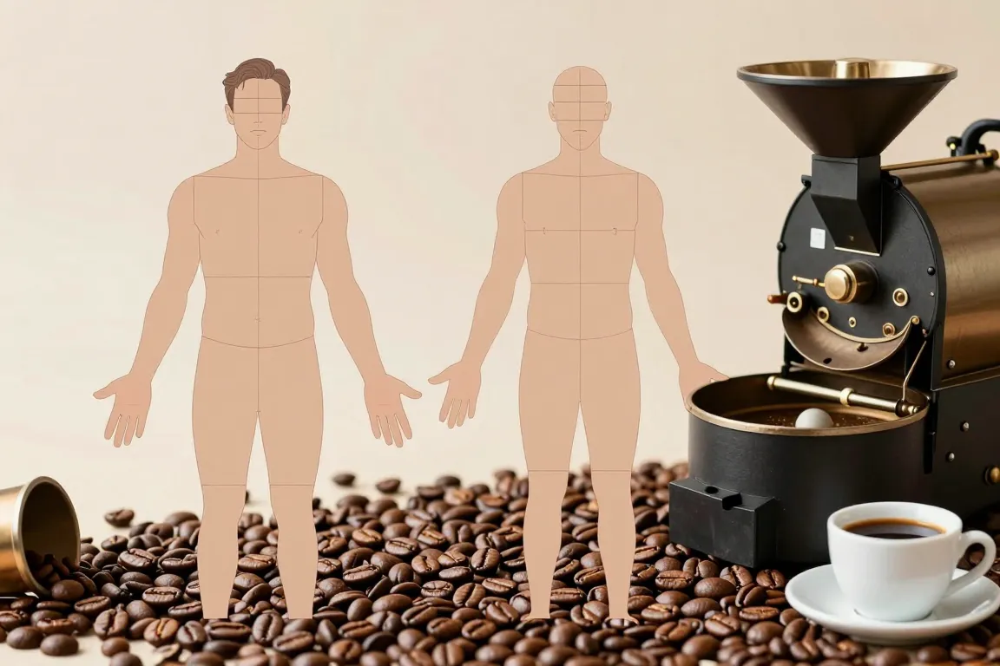

internet · 2017–now · also: Face swap, Synthetic face video, Deepfake
Video in which a face region is replaced by a generated one, with a soft blend seam and a check overlay of landmark dots. The form spread after 2017 through open code and phone apps.

Core thesis
The face in the frame is a layer, and the layer shows its seam: the style marks where a real image ends and a made image starts.
Design principles
Frame one face at 30% to 60% of the frame height, near-frontal, with even light.
Blend the replaced area with a feathered edge of 8px to 24px; let a faint colour mismatch of 3% to 6% show at the jaw.
Draw a detection box of 2px in green (#3DDC84) and 68 landmark dots of 4px on the face in the analysis view.
Show a pair of frames side by side, source on the left and result on the right, with a 2px divider.
Add a label chip of 12px mono capitals, for example SYNTHETIC, in the top-left corner at 90% opacity.
Keep the face patch at lower resolution than the rest of the frame, about 60% of the sharpness.
Cut the clip at 24 fps or 30 fps and let the seam flicker for 2 to 4 frames on a fast turn of the head.